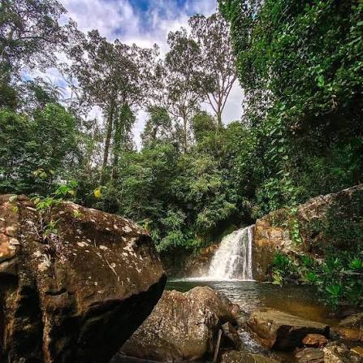

Sinharaja Rainforest

The reserve is well-integrated with the local population who live in some dozens of villages dotted along the border. The locals collect herbal medicine, edible fruits, nuts, mushrooms, other non-timber forest products including bees honey and a sugary sap collected from a local palm species of the genus Caryota. In 2013, UNESCO requested to halt the widening of the ancient road linking Lankagama area to Deniyaya along a 1-km jungle patch inside the protected area after a complaint from the Centre for Environmental and Nature Studies of Sri Lanka. A group of environmentalists carried out a social media campaign and asked the authorities to stop Martin Wijesinhe was one of the most significant people in Sri Lanka in connection to the Sinharaja,[6] unofficial guardian and caretaker of it since the 1950s till his death in 2021.[7] In March 2021, an expose of the extent of deforestation inside the Reserve by the environmentalist Bhagya Abeyratne received widespread media attention.[8][9] Tourism The Sinharaja Forest Reserve is open to the public and accessible to tourists through four main entrances: Weddagala (north-west), Rakwana (north-east), Neluwa (south-west), and Deniyaya–Mederipitiya (South-East). In accordance with conservation regulations, all visitors are required to enter the forest accompanied by a licensed guide. A variety of guided hiking tours are available, led by certified Sri Lankan tour guides, offering insights into the forest's rich biodiversity and ecological